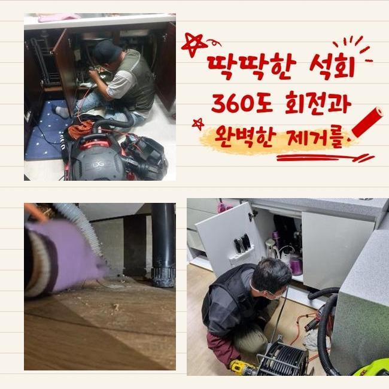
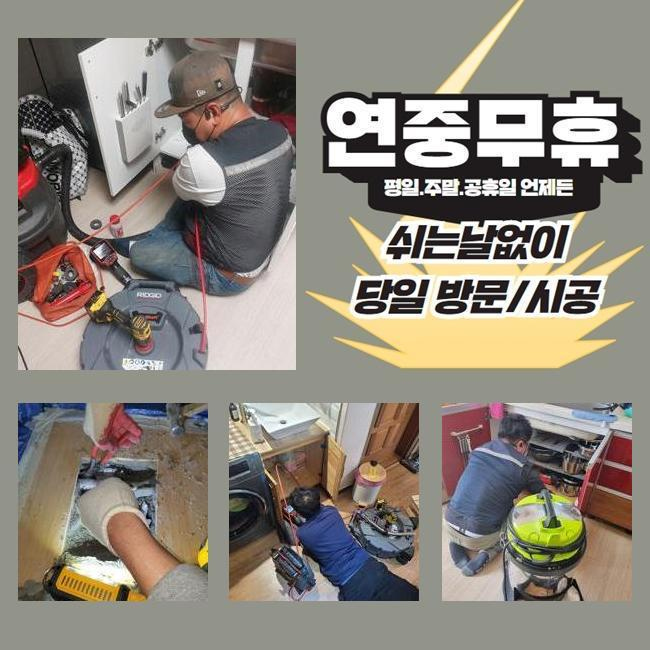
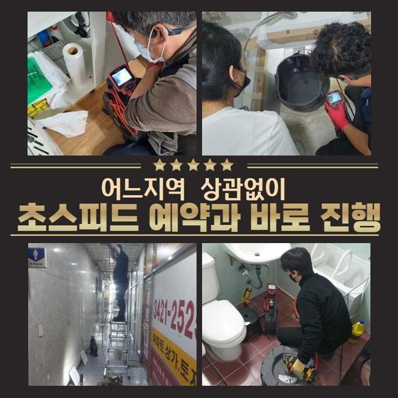
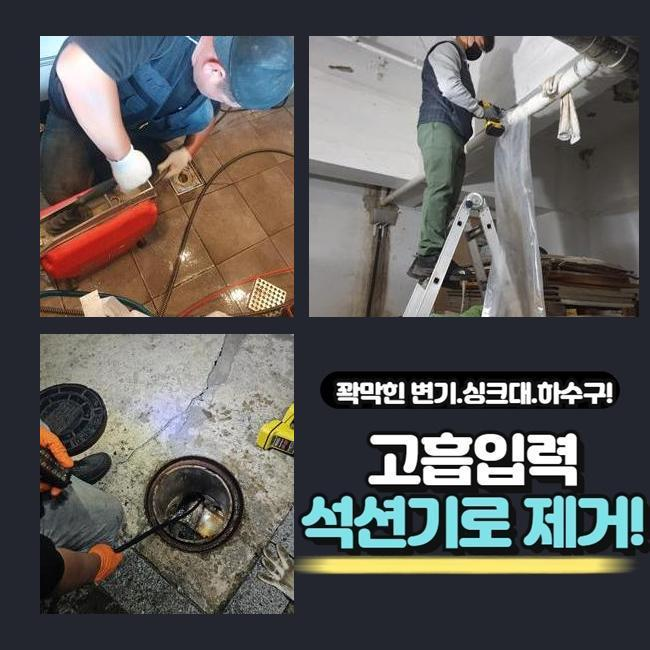
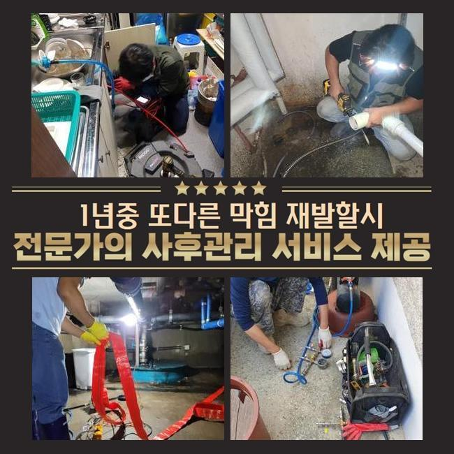
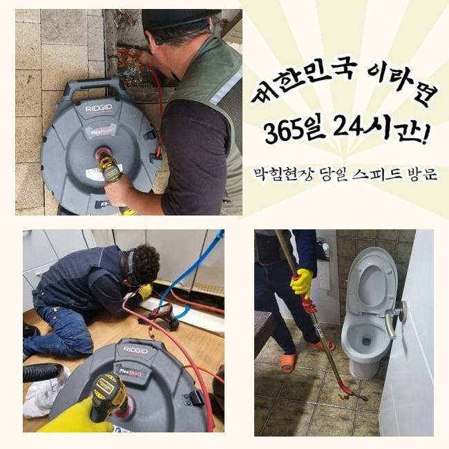
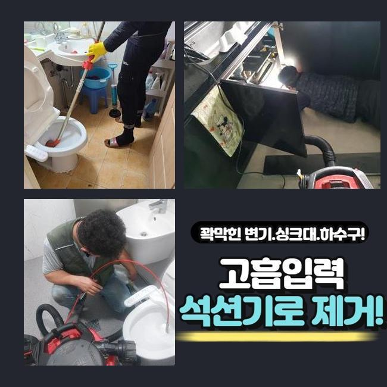

🏠 부평구 산곡동씽크대배수구역류 부개동 배수구뚫기 누수
용인 싱크대막힘 전문 시공 후기

📋 작업 개요
- 위치: 용인
- 서비스 유형: 싱크대막힘, 배관막힘, 누수수리, 역류해결, 뚫는업체, 배관청소, 고압세척, 설비공사, 악취차단
- 작업 일시: 2025. 3. 19. 13:32
- 업체명: 하수구수사대 (010-5615-2118)
🔍 문제 상황
부평구 산곡동씽크대배수구역류 부개동 배수구뚫기 누수
저희측은 배수시스템과 연계된 여러 수리를 시행중에 있죠
관련된 인력과 장비를 갖추고 의뢰자께서 겪고계신 문제들에 즉각 대처해드려요
이번 글에서는 식당에서 발생한 물막힘 처치 과정을 소개해드리려 합니다
이번주 초에 의뢰하신 데는 음식점이 모여있는 건물이었는데요
주방쪽 배수구가 막혀버렸으며 설상가상으로 화장실쪽의 통수도 온전하게 안된다며 빠르게 방문해달라고 하셨어요
해당위치에서 일을 마친 근무자가 즉각적으로 이동했고 알맞은 방책을 시행하기로 합니다
싱크대의 물막힘과 화장실공간의 고장이 일어난 위치는 보양식 전문식당이었습니다
개수대 부근에서는 다양한 음식재료들을 다루기에 관로체증이 빈번히 나타납니다
그래서 식당운영을 하고계신 경우엔 그와 관계된 여러종류의 조처를 실행하시곤 하죠
오랜기간 사려깊게 이용하셨더라도 어느날 갑자기 큰 이물이 유입된다면 물막힘이 발발하기 쉽기 때문에 관리가 수월하지 않아요
금번에 방문한 지점은 왜 고장이 생긴건지 세밀하게 확인하도록 하겠습니다
일단 주방설비부터 검사하기로 결정했어요
한식집의 경우 일반적인 주거지의 배수형태와는 다른 양상을 보이고 배수스텐의 부피도 상당합니다

🔎 원인 분석
💡 전문가 진단: 정밀 진단 장비를 사용하여 슬러지의 고착 여부를 판명하고 타격/세척 작업을 실시했습니다.
그렇기에 처리가능한 수도량도 늘어나게 되는건데요
그러므로 일반 가정의 유동성테스트를 기준점으로 정하고 수선여부를 결단하여선 곤란하며 충분한 물을 투입해서 선명하게 상태를 체크해야해요
해당공정을 정확히 실행하지 않는경우엔 몇달뒤에 물막힘이 또다시 일어날수가 있어요
검사를 해보았더니 원활하게 배수처리가 안된다는걸 간파할수가 있었어요
느릿느릿 빠져버리기는 하였지만 주방사용을 하기엔 역부족이었답니다
그다음은 관로안으로 배관내시경을 넣어서 명확히 문제를 점검해보기로 했습니다
기름성분은 물론이고 크고작은 석회성분들이 하수관속을 채우고 있었답니다
관로 속에 들어가면 곤란해지는 물질들이 누증되어서 문제가 생긴거예요
이것과 관련지어서 배관에 혼입되어선 안될 사안을 설명하는 시간을 가져보도록 할게요
이것들을 기억해두셨다가 일상에 활용해보실것을 권장합니다
기름성분은 물과 만나 고착화되고 그로인해 배수관에 붙어버릴 가망성이 커요
그렇기 때문에 반드시 종이류로 처리하고 세척하는게 필요한겁니다
부가적으로 기름분리수거 역시 습관적으로 활용하는게 좋습니다
매장에서 손님들에게 제공되는 커피찌꺼기들도 배관정체를 유발합니다
커피가루는 기름과 결합하는 특징이 있기에 관로내부에서 엉기기 쉽죠

🔧 작업 과정
그러하기에 일반쓰레기로 분류하여 처분하는게 바람직해요
설거지를 하는도중 잔여물질을 곧장 주방의 배수관으로 폐기한다면 관로에 누적될 가망성이 크죠
조미성분은 부피가 잘기에 거름망에 안걸리고 배관쪽으로 들어갈수 있으므로 분리해서 처리하는게 마땅합니다
메뉴를 조리하시다가 생성된 옥수수가루같은 것들도 개수대에 그냥 투입해 버리면 엉겨붙어서 물막힘이 유발될수 있죠
그렇기 때문에 이러한 것들은 필수로 분리수거해서 배수시설을 안정적으로 관리하는게 좋겠습니다
내시경설비로 심부까지 검사했더니 중앙의 관로까지 트러블이 일어났을거라 추정하였고 추가적으로 검정하기로 결단내렸죠
우선 의뢰인의 음식점의 배수관 정비를 시행해야 하겠습니다
닭요리 위주로 조리를 하셔서 여타 업장들과는 달리 유분찌꺼기가 상당량 누적되어 있었고 그외 음식쓰레기들까지 합쳐져 이물이 가득찬 상태였죠
그것들이 오랫동안 잔류하면서 배관과 하나가 돼버린 국면이었어요
파쇄용 공구를 작동시켜서 주방시설의 초기 세척작업을 실시하였죠
부품들은 배관의 특성에 맞게끔 다른것으로 바꿔서 사용하기도 하나 보통은 사슬형태의 체인노커를 쓰곤하죠
기다란 노즐부에 해당하는 관통헤드가 붙어있어서 하수관안에 투입한뒤 가동시키면 고속회전을 하면서 상존하는 하수관찌꺼기들을 분리시켜주는 공정을 수행하죠
통상적으로 샤프트를 이용하면 이물들이 수월하게 탈락합니다
하지만 이전 점검을 토대로 이건물은 중앙관로가 막혔다는 사실을 알아낸바가 있죠
그땐 개별하수관의 세정만으로 근원적인 트러블이 없어지지 않아요
뚫린걸로 오인될수 있으나 메인 관로가 막혔다면 몇주정도가 흐른다음에 거듭해서 파이프가 막히게 된답니다
개별배관 청소를 끝마친뒤 지하실쪽에 위치해 있는 횡주관로를 검사하기로 했죠
내시경설비를 투입하니 두텁게 누증된 흑회색의 침전물들이 굉장히 많이 깔려있었죠
장기간에 걸쳐 쌓인걸로 보였으며 사이즈도 방대하다보니 더욱더 수량이 방대해진거죠
이부분을 고압물청소를 통하여 해결하기로 하였으며 2시간30분간 청소를 실행했습니다
공동관까지 분쇄정비를 마친다음 고객님의 삼계탕집으로 가서 배수관 통수시험과 화장실안의 배수관까지 검사를 수행하였더니 정말 깔끔하게 뚫음이 이루어져서 말끔하게 소멸되었네요
금번 지점은 조리과정에서 나온 노폐물들과 석회물질 덩어리가 막힘의 사유라 볼수 있었고 지하주차장의 횡주관로까지 차단된 상태였기때문에 무척이나 심각했답니다
그 부분을 분쇄장비와 고압물세척으로 짜임새있게 처치하였으며 통수된 결과를 목견할수가 있던거죠
수선을 마감하고 차후 일어날수 있는 고장과 알고있으면 도움되는 배수관관리 방안을 설명해 드렸어요


✅ 작업 완료
귀가한뒤에 연락주신뒤 관련된 내용을 여쭤보셔서 살뜰하게 설명해 드렸어요
공사를 어설프게 이행한다면 추후 관로에 구조적인 결함까지 일어날수가 있죠
그러하기에 정확한 시공방식을 접목시켜 해결해내려는 태도가 필요합니다
그러므로 여러가지의 장비들을 기반으로 작업을 수행하여야 한다는걸 말씀드려요
식당에서 갑자기 배수관정체가 생겨난다면 정상적인 운영이 어려운 상황에 봉착하겠죠
그렇기 때문에 이글을 읽으시는 분들은 미미하게라도 이상이 목견되었다면 지연시키지말고 기술자에게 의뢰하시길 바라요




⚠️ 베란다 누수 및 방수 관리 방법
- ✅ 비가 많이 올 때 창틀 주변이나 아래층 천장에 얼룩이 생기는지 정기적으로 확인해 보세요.
- ✅ 우수관 주변 실리콘 마감이 들뜨거나 깨진 틈새가 있는지 손상 여부를 수시로 체크하세요.
- ✅ 베란다 바닥 타일의 줄눈(메지)이 소실되면 그 틈으로 물이 침투하여 누수가 유발됩니다.
- ✅ 누수 의심 증상 발견 시 방치하면 아래층 손실이 커지므로 즉시 전문가의 진단을 받으십시오.
💡 핵심 정리
- 확실한 장비 작업(내시경 점검 및 샤프트 스케일링)으로 원인을 뿌리 뽑습니다.
- 작업 후 1년 이내에 동일한 부위 재발 시 100% 무상 A/S 서비스를 보장합니다.
- 서울 · 경기 · 인천 전 지역에 24시간 언제든 긴급 출동할 수 있도록 항시 대기 중입니다.
❓ 자주 묻는 질문 (FAQ)
🚨 용인 싱크대막힘 문제로 고민이신가요?
정확한 원인 진단과 확실한 시공으로 재발 없는 해결을 약속드립니다.
24시간 긴급 출동 | 서울 · 경기 · 인천 전지역 | 1년 내 재발 시 무상 A/S